Value and policy iteration for shuttle dispatching; REINFORCE with and without a baseline on CartPole-v1 and Pong-v5.
| GitHub username | aasritha-oql7872 |
|---|---|
| Repository name | mlds-assignment1 |
| Repository link | https://github.com/aasritha-oql7872/mlds-assignment1 |
| NetID | oql7872 |
git clone https://github.com/aasritha-oql7872/mlds-assignment1.git && cd mlds-assignment1 python3 -m venv .venv && source .venv/bin/activate # Python 3.10 or 3.11 pip install -r requirements.txt # torch, gymnasium, ale-py (has the Pong ROM) python dp/run_dp.py # Part 2: 3 solvers + 3 required plots python dp/validate_dp.py # Part 2: 41 validation checks python pg/train.py --game cartpole # PG Part 1, CartPole python pg/train.py --game cartpole --baseline # PG Part 2, CartPole python pg/train.py --game pong # PG Part 1, Pong (about 11 h on CPU) python pg/train.py --game pong --baseline # PG Part 2, Pong (about 14 h on CPU) python pg/validate_pg.py # PG validation: 20 checks python pg/validate_edge.py # PG edge cases: 23 checks (about 1 min) python pg/plots.py # re-draw all PG figures and comparisons # each train.py run also rolls out 500 evaluation episodes and draws its plots # outputs: results/dp/, results/pg/<run>/, results/pg/validation/
On the deepdish cluster, nohup bash run_deepdish.sh > logs/all.log 2>&1 & runs everything in the background. The final Pong runs were done on a CPU on mlds-deepdish2
(no GPU was used for them), because the policy network is tiny and acts once per frame, so an already-busy shared GPU only added queueing delay. Each run writes its own
config.json, train_log.csv, eval_rewards.txt, eval_stats.json, training_curve.png and eval_histogram.png under results/pg/<run>/.
Every figure in this report is read from those files.
| Component | Definition |
|---|---|
| State | s in {0,...,200}: customers waiting at the start of a decision epoch (capped at 200 as the assignment allows). |
| Action | a in {0 = hold, 1 = dispatch}. |
| Dispatch | A dispatched shuttle takes away min(s, K) customers, K = 15. Customers left behind: post = s − a·min(s, K). |
| Cost | c(s,a) = cf·a + ch·post, with cf = 100 and ch = 2 (holding cost is charged on customers left waiting after the dispatch decision, as the assignment states). |
| Transition | Then A ~ Unif{1,2,3,4,5} customers arrive: s' = min(post + A, 200). |
| Objective | Minimise expected discounted cost, γ = 0.95. (Equivalent to maximising reward = −cost.) |
Assumptions stated. (1) Customers who arrive when the station already holds 200 leave (balk), so the cap is a hard ceiling and no probability mass is lost. (2) Arrivals happen after the dispatch decision within a period, so a dispatch always acts on customers already waiting. (3) The problem is solved as cost minimisation. (4) Backward induction uses terminal value VT = 0 at T = 500.
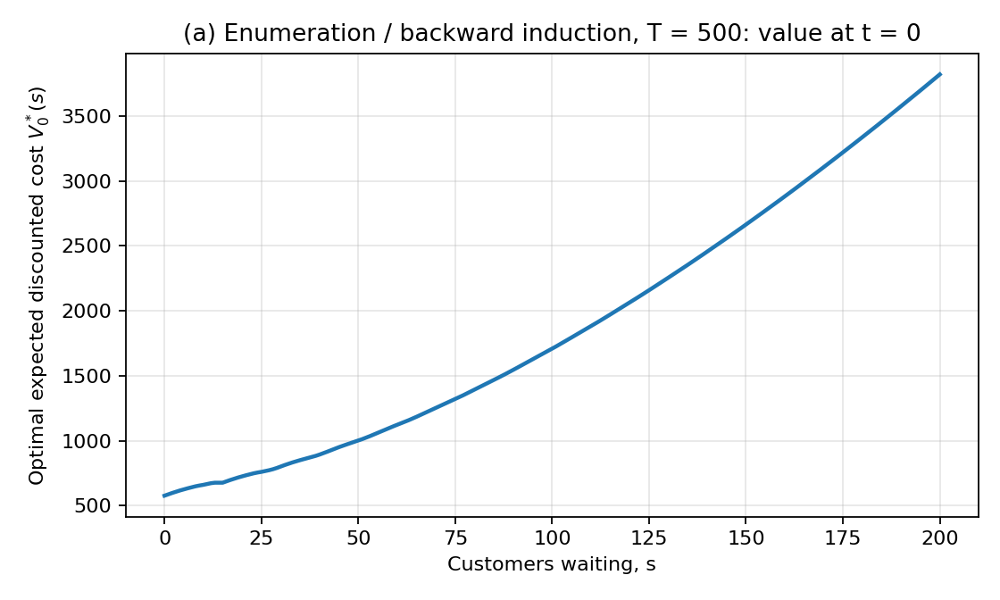
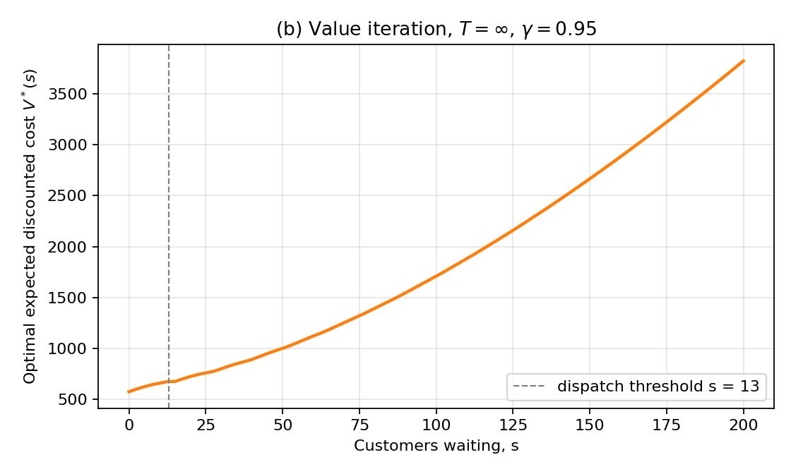
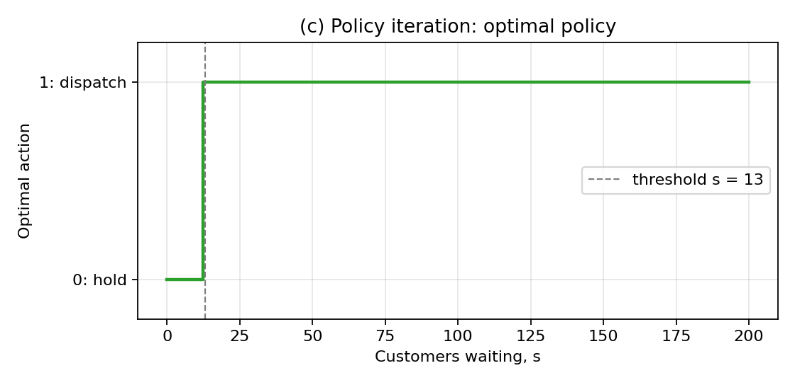
| Quantity | Value |
|---|---|
| Optimal threshold (enumeration at t = 0, value iteration, policy iteration) | 13, 13, 13 |
| V*(0) | 576.67 |
| V*(13) = V*(14) = V*(15) | 676.67 = cf + V*(0) |
| V*(50), V*(100), V*(200) | 1001.5, 1709.0, 3821.6 |
Reading the plots. The value function rises with the queue length and is flat on 13–15, because dispatching there clears the whole queue and so costs exactly cf + V*(0). The threshold sits at 13, below the capacity of 15: with up to 5 arrivals per period, waiting at 13 could leave more than a shuttle-load at the next epoch, so it is better to go slightly before the shuttle is full.
| Edge case | Handling | Evidence (results/dp/validation.txt) |
|---|---|---|
| Queue at the 200 cap | Excess arrivals balk, so every transition row still sums to 1. | Max row-sum error 0; hold at s=200 stays at 200 with probability 1; at s=197 P(reach 200) = P(A≥3) = 0.6. |
| Dispatch with fewer than K waiting | Removes min(s, K), so the queue never goes negative. | s=7, dispatch: next state in {1,...,5}, cost 100. |
| Dispatching an empty station | Allowed by the model, never optimal. | π*(0) = hold; Q(0,hold) − Q(0,dispatch) = −100. |
| State 0 after an epoch | Unreachable because A ≥ 1. | Column 0 of P is all zeros. |
| End of the finite horizon | VT = 0, so near the end dispatching cannot recoup cf. | Last period: never dispatch, since 2·15 = 30 < 100. With 1–3 periods left the threshold is "never"; from 10 periods left it is 13. |
| Exactly K = 15 waiting | Dispatch removes all 15; nobody is left behind. | Cost 100; next state uniform on {1,...,5}. |
| K + 1 = 16 waiting | Dispatch takes 15 and leaves 1, which still pays the holding cost. | Cost 102 = 100 + 2·1; next state uniform on {2,...,6}. |
| 198 waiting, hold | Several arrival values hit the cap, so their probabilities must accumulate on state 200. | P(199) = 0.2 and P(200) = 0.8. |
| Invalid arrival probabilities | The model refuses to be built. | A pmf summing to 0.9, and one containing −0.2, both raise an error. |
| cf = 0 at an empty station | Hold and dispatch cost the same, so ties must resolve consistently. | Q(hold) = Q(dispatch) = 0; ties go to hold. |
| Convergence and ties | Value iteration uses a stopping rule that bounds policy error; policy iteration keeps the old action on ties. | Greedy policy of V* reproduces V* (max difference 4.9e-9). |
All 41 checks pass (41/41); the last 6 are the boundary cases listed in the table above. Run with python dp/validate_dp.py. Each test asserts a prediction made before running it.
| Test | What it does | Result |
|---|---|---|
| Independent solvers agree | Value iteration and policy iteration share no code beyond the model. | Values agree to 4.9e-9; both give threshold 13. |
| Bellman residual | Checks that V* satisfies V = T V directly. | ||TV* − V*|| = 2.5e-10. |
| Contraction | Successive value-iteration errors should shrink by at most γ per step; also restarts from a random V. | Max ratio 0.9500; same fixed point from a random start (diff 9.7e-9). |
| Horizon sweep (Figure 6) | ||V0T − V*|| should fall like γT. | Stays below γT||V*|| at every T tested: 3.4e3 at T=1, 0.02 at T=200, 0 at T=500. |
| Brute-force policy search | Evaluate every one of the 202 threshold policies exactly (Figure 5); and exhaustively search all 212 = 4096 policies of a 12-state instance. | Best threshold = 13, and V* ≤ every threshold policy at every state; the exhaustive search matches policy iteration exactly. |
| Monte Carlo rollouts | Simulate the optimal policy 20,000 times and compare the discounted cost to V*. | From s=0, 13, 50, 150: |z| = 0.39, 1.70, 0.16, 1.90 (all within the 2-standard-error band). |
| Structure predicted by theory | V* should be non-decreasing in s; policy should be threshold-type. | Min increment 0.0; threshold structure confirmed. |
| Parameter changes with a predictable answer (Figure 4) | cf=0; ch=0; cf=107; γ=0 (policy then dispatches iff ch·min(s,K) > cf). | Thresholds 1 / never / never / never (matches the formula); γ=0 with cf=20 gives threshold 11, exactly as predicted. |
A note on one number. Enumeration and value iteration differ by exactly 0.0. That is not independent evidence: value iteration happened to stop after exactly 500 iterations, and 500 Bellman updates from V = 0 are backward induction with T = 500. The independent evidence is value iteration versus policy iteration, the Bellman residual, the brute-force searches and the simulation.
Starting from an empty station (seed 1). Q is the expected discounted cost of each action under V*.
| t | s | Q(hold) | Q(dispatch) | action | cost | A | next s |
|---|---|---|---|---|---|---|---|
| 0 | 0 | 576.67 | 676.67 | hold | 0 | 3 | 3 |
| 1 | 3 | 607.61 | 676.67 | hold | 6 | 3 | 6 |
| 2 | 6 | 633.62 | 676.67 | hold | 12 | 4 | 10 |
| 3 | 10 | 660.12 | 676.67 | hold | 20 | 5 | 15 |
| 4 | 15 | 701.67 | 676.67 | dispatch | 100 | 1 | 1 |
| 5 | 1 | 587.44 | 676.67 | hold | 2 | 1 | 2 |
| 6 | 2 | 597.77 | 676.67 | hold | 4 | 5 | 7 |
| 7 | 7 | 641.57 | 676.67 | hold | 14 | 5 | 12 |
| 8 | 12 | 672.89 | 676.67 | hold | 24 | 2 | 14 |
| 9 | 14 | 690.40 | 676.67 | dispatch | 100 | 2 | 2 |
The queue grows by the arrivals each period and the agent holds, paying 2 per waiting customer, until Q(dispatch) drops below Q(hold), which first happens at s ≥ 13. It then pays 100, the queue resets, and the cycle repeats. Q(dispatch) is constant at 676.67 = cf + V*(0) whenever s ≤ 15, as it should be.
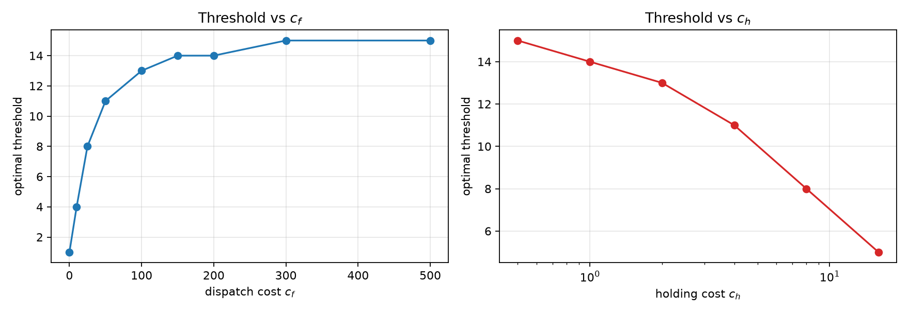
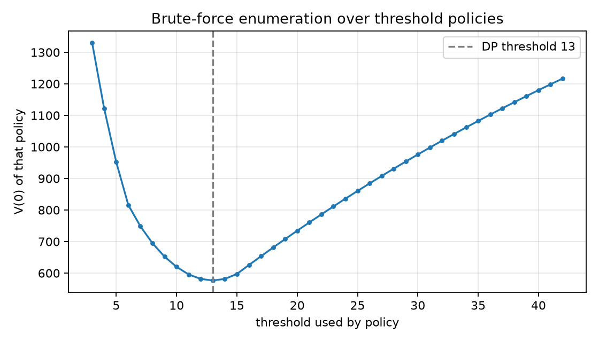
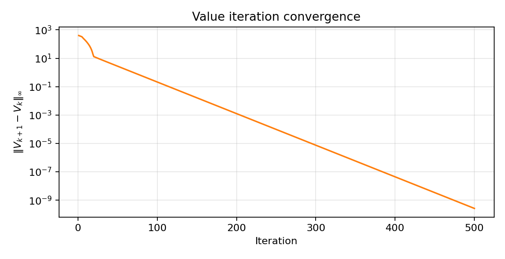
The policy πθ(a|s) is a one-hidden-layer ReLU network with a softmax output. After each batch of N episodes we take one Adam step on the loss
L(θ) = − (1/N) Σepisodes Σt log πθ(at|st) · Gt, Gt = rt + γ Gt+1,
so −∇L is the reward-to-go REINFORCE estimate of the policy gradient of the discounted return J = E[Σt γt rt] (with the usual convention described in the note below). Using the return from step t onward (rather than from the start of the episode) is valid because later actions cannot change earlier rewards, and it removes noise.
| CartPole-v1 | Pong-v5 (ALE/Pong-v5) | |
|---|---|---|
| Discount γ | 0.95 | 0.99 |
| Policy network | 4 → 128 → 2 | 6400 → 200 → 2 |
| Optimiser | Adam, lr 0.003 | Adam, lr 0.001 |
| Episodes per update N | 1 | 10 |
| Training episodes | 1000 | 10,000 |
| Input | the 4 state variables | difference of consecutive 80×80 frames from the given preprocess |
| Actions | left, right | only RIGHT (2) and LEFT (3); output 0 → 2, output 1 → 3 |
Learning rate. The assignment suggests 0.01 and allows another value with justification. For CartPole I used 0.003 because 0.01 sometimes collapses a run to a near-random policy (one of five seeds ended at an evaluation mean of 9 with the baseline, another at 16 without it; see Table 3). Pong uses 0.001 with larger batches, since one update there averages about 50,000 decisions.
Pong-specific choices.
gymnasium + ale-py (ALE/Pong-v5, frame-skip 4, sticky actions 0.25) instead of gym[atari], which needs a separate ROM licence step. The assignment requires Pong-v5, which is this version.A note on discounting. The lecture notes weight each reward in the step-t term by γt'−t (reward-to-go measured from t), which is what is implemented here. The Lab 4 formula uses γt' with the absolute step index, which multiplies the step-t term by an extra γt. That extra factor is what the exact gradient of the discounted return contains; dropping it, as the lecture form does, weights late steps of an episode more heavily and gives every step the same effective horizon. I used the lecture form, which is also the common practical choice.
Evaluation. After training, 500 episodes are rolled out with the trained stochastic policy, on seeds never used in training. The histogram, mean and standard deviation (sample, ddof=1) are reported.
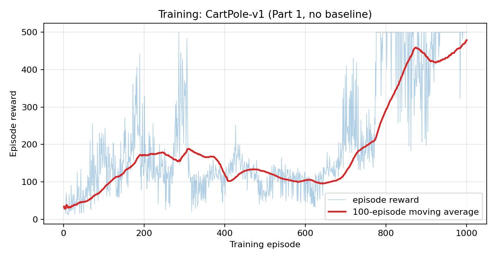
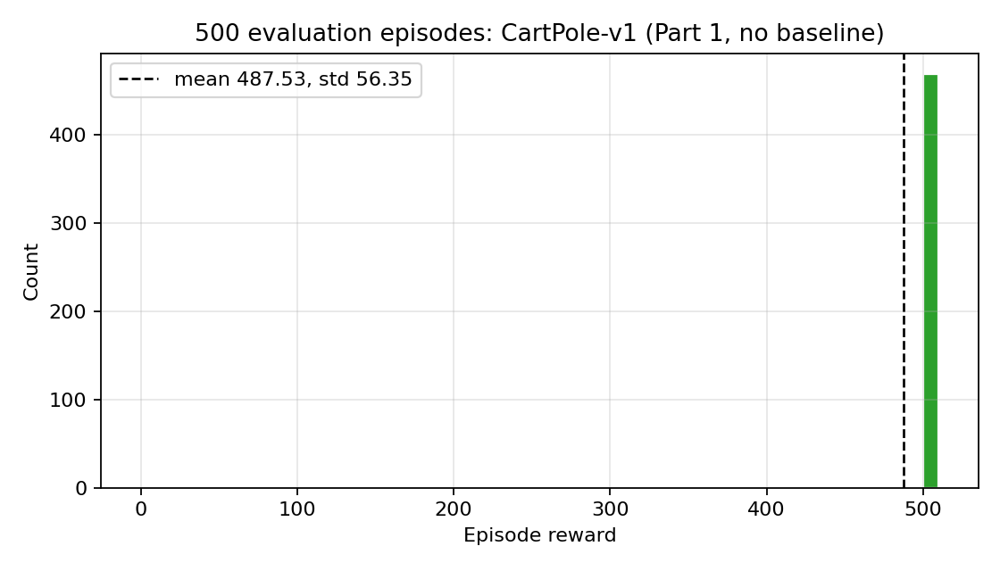
| CartPole, Part 1 (no baseline) | Mean | Std |
|---|---|---|
| 500 evaluation episodes (maximum possible score is 500) | 487.5 | 56.4 |
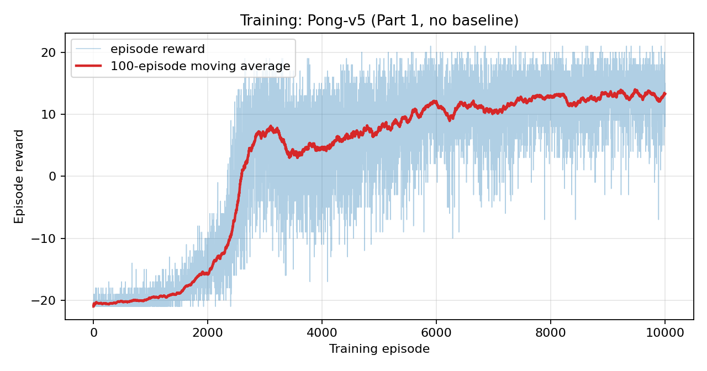
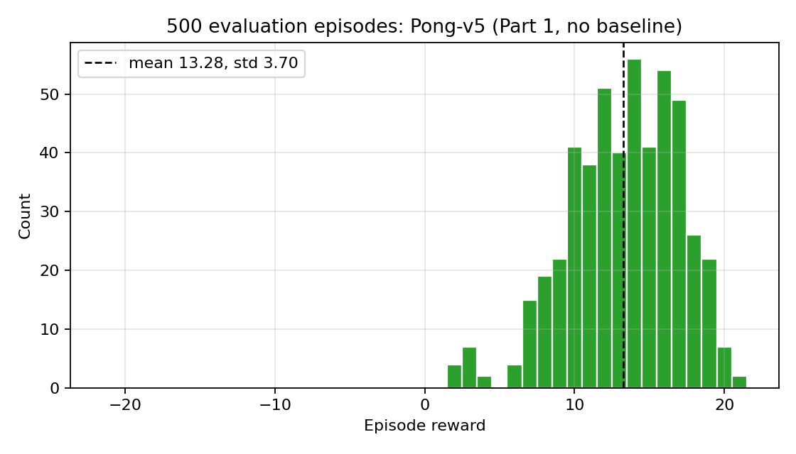
| Pong, Part 1 (no baseline) | Mean | Std |
|---|---|---|
| 500 evaluation episodes (score ranges from −21 to +21) | 13.28 | 3.70 |
| Reference: uniformly random RIGHT/LEFT policy (20 episodes) | −20.35 | 0.96 |
The agent started at the random-policy level (about −20) and learned to beat the built-in opponent in almost every game: the evaluation scores lie between about +2 and +21, with none near −20. Learning begins only after about 2,000 episodes, once the paddle first connects with the ball often enough to produce a signal.
| Edge case | Handling | Evidence (results/pg/validation/validation.txt) |
|---|---|---|
| Return computation | Backward recursion Gt = rt + γGt+1. | r = [1,1,1], γ = 0.5 gives [1.75, 1.5, 1]; a one-step episode gives G0 = r0. |
| CartPole's 500-step limit | Treated as terminal (no bootstrapping). | G0 = (1 − 0.95500)/0.05 = 20.0000; only the last ~60 steps get a lower G. |
| Pong rallies | Return restarts after each scored point. | Rewards [..., −1, ..., +1] give returns [−0.98, −0.99, −1.0, +0.99, +1.0]. |
| Pong first frame | No previous frame, so the input is zeros. | Checked: first input of an episode is all zeros. |
| Pong pre-processing | The given function is used; a .copy() stops it modifying the environment's frame in place. | Output is 80×80 binary float32; only 0.53% of pixels are on (paddles and ball); the environment's frame is unchanged. |
| Pong action mapping | Network output 0 → action 2 (RIGHT), 1 → 3 (LEFT). | Run on the real game: RIGHT moves the paddle row 34 → 1 (up), LEFT moves it 34 → 78 (down). |
| CartPole termination | The episode ends when the pole falls or the cart leaves the track, whichever comes first. | Always pushing left: ends after 11 steps at angle 0.26 (limit 0.21), terminated. A cart placed at x = 2.39 with the pole upright: ends with x = 2.43, terminated. |
| CartPole time limit | A hand-written balancing controller reaches the limit; that is truncation, not failure, and the return is computed as for a finished episode. | 500 steps, truncated = True, terminated = False; G0 = 20.000, G499 = 1. |
| Episode separation | Each episode starts from a fresh reset; nothing carries over. | Same seed gives an identical episode (inputs and rewards). |
| Identical Pong frames | Frame difference must be zero. | Difference is exactly 0. |
| Moving ball | The difference should show +1 where the ball arrived and −1 where it left, in a few pixels. | Median 26 changed pixels per step out of 6400. |
| A point versus the end of the game | Scoring a point must not end the episode; the game ends when one side reaches 21. | One random-policy game: 22 points scored in 1043 steps; ended with 1 win and 21 losses, terminated. |
| Return around a point boundary | Rewards [0,0,+1,0,0,−1] form two segments. | G = [0.9801, 0.99, 1, −0.9801, −0.99, −1]. Changing the second point to −5 leaves the first three returns unchanged; without the reset, G0 would be 0.029 instead of 0.980. |
| Action probabilities | Finite, non-negative, summing to 1 for any input; stable when the policy is almost deterministic. | 256 random inputs per game: row sums within 1.2e-7. A rare action with P = e−400 gives a finite loss (400.0) and finite gradient. |
| Return normalisation | Not applicable: returns are not normalised, so there is no division by a zero variance. | — |
| Training versus evaluation | Evaluation episodes use seeds never seen in training. | Training seeds 0–9,999; evaluation seeds start at 109. |
Two scripts, both passing. python pg/validate_pg.py (20/20; --quick for a shorter version) holds the learning-behaviour tests below. python pg/validate_edge.py (23/23, about a minute; log in results/pg/validation/edge_cases.txt) holds the edge cases in the table above, plus the gradient and training checks in Section 4.5 and a repeated negative control.
| Test | What it does and the prediction | Result |
|---|---|---|
| Exact-gradient test | One-step problem where the true policy gradient can be computed in closed form. The average of many REINFORCE gradients must equal it. | Cosine 0.986 with the exact gradient; worst |z| over 42 parameters is 1.84, within sampling noise. |
| Corridor toy task (Figure 11) | Deterministic corridor of length 6; the optimal path takes 6 steps. A correct learner must find it. | P(right) > 0.99 in every cell; greedy path = 6 steps. |
| Negative control (Figure 12) | Shuffle each episode's returns, destroying credit assignment. Learning should be far slower and stay near random play (about 22). | Seed 1, episodes 301–400: true returns 351.9, shuffled 13.6. Repeated on 5 more seeds: shuffled/true = 0.26, 0.28, 0.33, 0.17, 0.34. Shuffled agents end at 34–71, above random (22), because shuffling keeps each episode's total return. A first version with 300 episodes gave 0.53 on one seed, because the true agent had not yet learned by then; the horizon was returned to the original 400. |
| First 10 steps (Table 2) | Print states, action probabilities, returns for one episode; the agent should push toward the side the pole is falling. | corr(pole angular velocity, P(right)) = 0.938 over 217 steps. |
| Pong random-policy reference | A random RIGHT/LEFT policy gives the number any learning curve has to beat. | −20.35 ± 0.96, against +13.28 after training. |
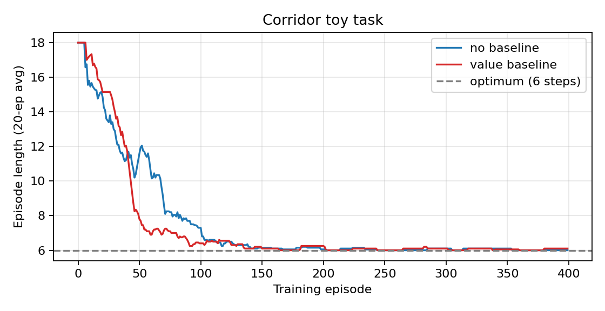
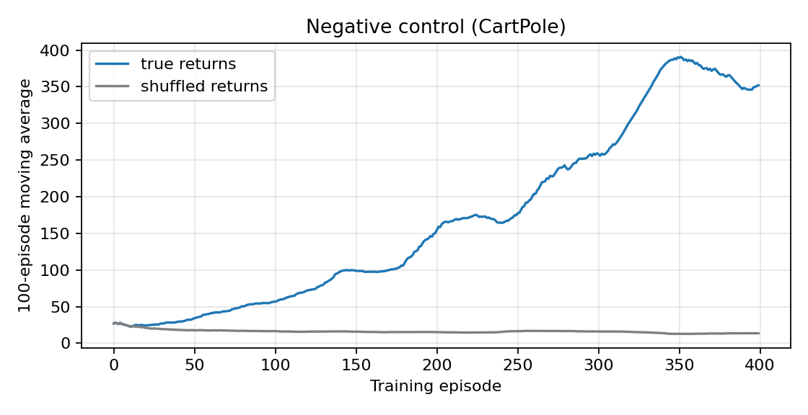
I use a learned, state-dependent baseline: a second network Vφ(s) with the same shape as the policy network but one output (4 → 128 → 1 for CartPole, 6400 → 200 → 1 for Pong), trained by mean-squared error to predict the reward-to-go, with its own Adam optimiser at the same learning rate as the policy. The policy gradient then uses the advantage:
∇J ≈ (1/N) Σepisodes Σt ∇ log πθ(at|st) · ( Gt − Vφ(st) )
The only difference from Part 1 in the code is one line (adv = G - v.detach() instead of adv = G), plus the value-network update. The baseline's value is detached so the policy gradient does not flow into Vφ.
Why this keeps the gradient unbiased. Vφ(st) depends only on the state, not on the action taken, and Ea~π[∇ log π(a|s)] = 0, so subtracting it adds zero in expectation while removing a state-dependent offset from Gt. Why a state-dependent baseline rather than a constant: in CartPole every reward is +1, so every return is positive and a constant baseline can only remove a global average. V(s) captures how good the current state is (for CartPole, how far from failing), so the advantage G − V(s) says whether this action did better or worse than usual from here. The lecture's constant baseline and the optimal B(s) = Vπ(s) are the two ends of this choice; this is the second. All other settings (γ, learning rate, batch size, number of episodes, seeds) are identical to Part 1.
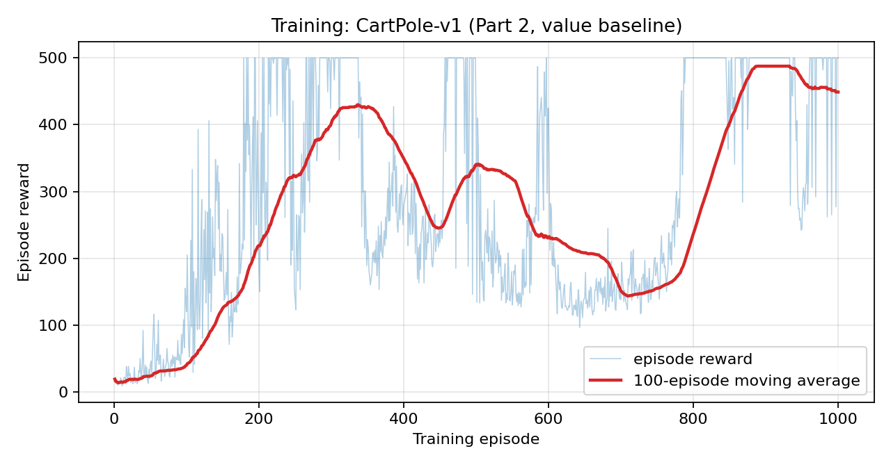
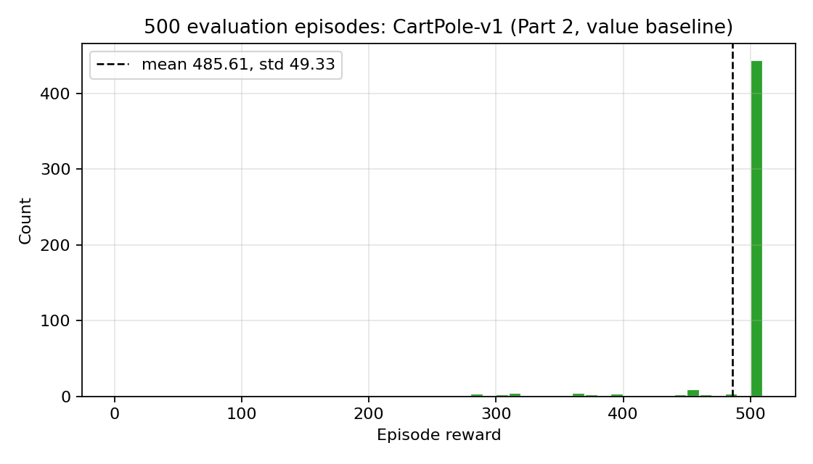
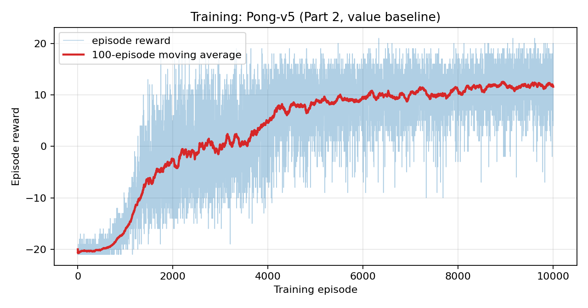
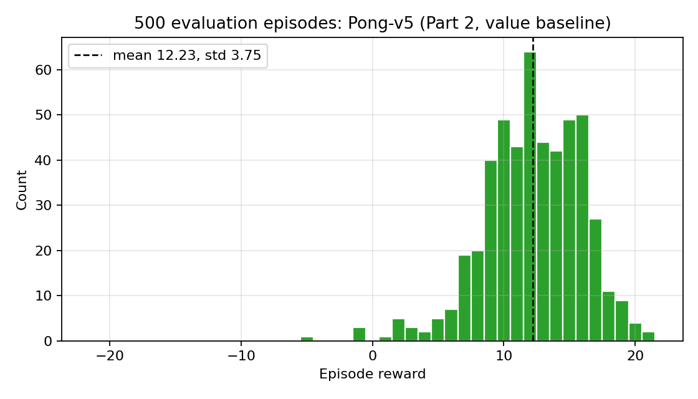
| Evaluation, 500 episodes | Part 1: mean (std) | Part 2 (baseline): mean (std) |
|---|---|---|
| CartPole-v1 (maximum 500) | 487.5 (56.4) | 485.6 (49.3) |
| Pong-v5 (range −21 to +21) | 13.28 (3.70) | 12.23 (3.75) |
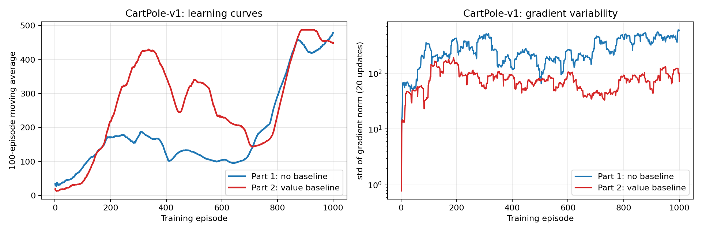
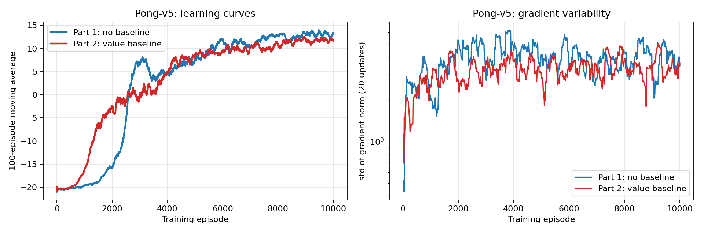
What the evidence says, and what it does not.
Both methods also show the instability typical of vanilla policy gradients on CartPole: the 100-episode average can drop sharply after reaching 400+ (Figures 7, 13, 17), which is why a single curve should not be read as a reliable ranking.
| Edge case | Handling | Evidence |
|---|---|---|
| Baseline must not depend on the action | V(s) takes only the state; it is detached in the policy loss. | Difference between baseline and no-baseline gradient estimates has mean zero (Section 4.6). |
| The value network is only an estimate of E[G|s] | Any function of the state alone keeps the gradient unbiased, so errors in Vφ cost variance, not correctness. | Table 2: V ≈ 17 while this episode's G = 20 (the value network averages over all episodes, and this one survived longer than average), yet the zero-mean-difference test below still passes. |
| Value network lagging the policy at the start | It is trained every update from the first one; early advantages are mostly G. | Training curves: the baseline run learns at least as fast early on. |
| CartPole's 500-step limit and Pong's reset-per-point returns | Same returns as Part 1 are used as the regression target. | Same return tests as Section 3.4. |
| Pong frame input | Same difference-frame input; the value network sees the same input as the policy. | Same pipeline checks as Section 3.4. |
| Advantage equal to zero | If the baseline predicts every return exactly, the policy update vanishes. | Gradient is exactly zero (all returns zero, and G = V, tested separately). |
| Advantage must be a constant for the policy loss | It is detached, so the policy loss cannot train the value network. | The advantage passed to the policy loss has requires_grad = False; the value network still changes through its own MSE loss. |
| Evaluation versus training | Evaluation must not update any weights; training must. | Weights identical before and after 5 evaluation episodes; changed by training (mean |change| 0.017). All weights of both networks finite after training. |
| Test | What it does and the prediction | Result |
|---|---|---|
| Exact-gradient test with baseline | Same closed-form problem as Part 1; the baseline must leave the mean unchanged and lower the variance. | Cosine with the exact gradient 1.000 (worst |z| 1.21); total variance 115.45 → 0.573 (201× smaller). |
| Unbiasedness on CartPole | At one fixed policy, compare the per-episode gradients with and without the baseline over 300 episodes: their difference should have zero mean. | 0.0% of 898 parameters have |z| > 2.58 (about 1% expected by chance). |
| Variance reduction on CartPole | Same fixed policy, total gradient variance with and without the baseline. | 5.2× lower with the baseline. |
| Corridor toy task | Both versions must still find the 6-step optimum. | Both do (Figure 11), P(right) > 0.99 everywhere. |
| Multi-seed, multi-learning-rate table | 5 seeds × 2 learning rates × with/without baseline, 1000 episodes each (Table 3, Figure 19). | Baseline has the higher average at both learning rates. |
Identity checks (validate_edge.py) | All returns zero gives a zero gradient; a baseline that equals the returns gives zero advantage and a zero gradient; the advantage is detached. | All pass (Section 4.5). |
| First 10 steps (Table 2) | Print V(s), G and the advantage G − V for the first steps of a Part 2 episode. | V(s) ≈ 17 against G = 20, advantage about +2.5 on every step, and P(right) tracks the pole's motion. |
| Table 2. First 10 steps of one CartPole episode, Part 2 agent (G is the discounted return; V the baseline) | |||||||
|---|---|---|---|---|---|---|---|
| t | x | ẋ | θ | θ̇ | P(right) | G | V, G−V |
| 0 | 0.018 | −0.045 | −0.028 | −0.032 | 0.438 | 20.00 | 17.01, 2.99 |
| 1 | 0.017 | 0.151 | −0.029 | −0.333 | 0.138 | 20.00 | 17.34, 2.66 |
| 2 | 0.020 | −0.044 | −0.035 | −0.049 | 0.407 | 20.00 | 17.07, 2.93 |
| 3 | 0.019 | 0.152 | −0.036 | −0.353 | 0.123 | 20.00 | 17.45, 2.55 |
| 4 | 0.023 | −0.043 | −0.043 | −0.072 | 0.369 | 20.00 | 17.15, 2.85 |
| 5 | 0.022 | 0.153 | −0.045 | −0.378 | 0.108 | 20.00 | 17.58, 2.42 |
| 6 | 0.025 | −0.042 | −0.052 | −0.100 | 0.325 | 20.00 | 17.25, 2.75 |
| 7 | 0.024 | −0.236 | −0.054 | 0.176 | 0.651 | 20.00 | 17.35, 2.65 |
| 8 | 0.019 | −0.040 | −0.051 | −0.133 | 0.286 | 20.00 | 17.34, 2.66 |
| 9 | 0.018 | −0.234 | −0.053 | 0.143 | 0.614 | 20.00 | 17.41, 2.59 |
G = 20.00 in every row because the episode ran 217 steps: for γ = 0.95, (1 − 0.95217)/0.05 ≈ 20. P(right) is high when the pole is tipping right (θ̇ > 0) and low when it tips left.
Table 3. CartPole, 5 seeds, 1000 episodes (results/pg/validation/validation.txt, section 6) | ||||
|---|---|---|---|---|
| Setting | Last-100 training mean | Evaluation mean | Per-seed evaluation means | |
| lr 0.01, no baseline | 85.2 | 64.1 | 115, 47, 16, 49, 93 | |
| lr 0.01, baseline | 241.6 | 176.4 | 500, 183, 9, 125, 64 | |
| lr 0.003, no baseline | 223.6 | 209.3 | 239, 470, 112, 107, 118 | |
| lr 0.003, baseline | 321.5 | 250.8 | 488, 155, 203, 186, 223 | |
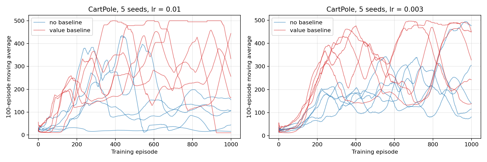